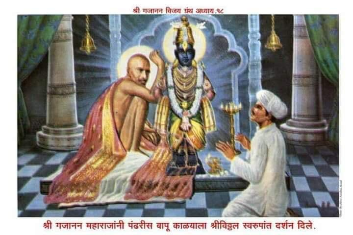

॥ अध्याय १८॥

॥ श्रीगणेशाय नमः ॥
जयजयाजी चिद्रिलासा ।
हे गोविंदा श्रीनिवासा ।
हे आनंदकंदा परेशा ।
पाहि माम् दीनबंधो ॥१॥
हे केशवा केशीमर्दना ।
हे माधवा मधूसुदना ।
हे पूतनाप्राणशोषणा ।
पांडुरंगा रुक्मिणीपते ॥२॥
काय माझ्या आहे मनीं ।
तें तूं जाणसी चक्रपाणी ।
तेंच का रे तुजलागुनी ।
बोलून दावूं पद्मनाभा ॥३॥
भक्त जी जी इच्छा करी ।
ती तूं पुरविसी श्रीहरी ।
ऐसें पुराणाभीतरीं ।
आहे वर्ण्न बहुसाळ ॥४॥
म्हणून माझ्या मनोरथा ।
पूर्ण करा पंढरीनाथा ।
सोडा मनींची कठोरता ।
दासगणू हा तुझा असे ॥५॥
अकोटाचे शेजारीं ।
मुंडगांव नामें एक नगरीं ।
तेथें बायजा नामें खरी ।
समर्थाची भक्तीण असे ॥६॥
हळदी माळ्याच्या वंशांत ।
इचा जन्म झाला सत्य ।
शिवराम नामें इचा तात ।
भुलाबाई जननी असे ॥७॥
बायजाचे बाळपणीं ।
लग्न झालें होतें जाणी ।
ललाटीं जें विधात्यांनीं ।
लिहिलें असेल तेंच घडे ॥८॥
बायजा आली तारूण्यांत ।
गर्भाधान करण्याप्रत ।
घेऊन गेला तिचा तात ।
जामाताच्या गृहासी ॥९॥
परी उपयोग नाहीं झाला ।
जामात षंढ होता भला ।
तेणें जनकजननीला ।
शिक झाला अनावर ॥१०॥
बायजेकडे पाहून ।
जननी करी रोदन ।
माझ्या बाईचें तारूण्य ।
वांझ पाहूं राहातें ॥११॥
भुली म्हणे शिवरामासी ।
बायजा न ठेवा ऐशी ।
दुसरा नवरा करून इसी ।
देणें आहे भाग पाहा ॥१२॥
शिवराम म्हणे त्यावर ।
ऐसा नको सोडूं धीर ।
हा पुरुषत्वाचा प्रकार ।
खरा एकदम कळेना ॥१३॥
कांहीं दिवस वाट पाहूं ।
नको ऐसी अधीर होऊं ।
बायजासी येथेंच ठेवूं ।
तिच्या सासुरवाडीला ॥१४॥
नपुसकत्व अधोपरी ।
आलें असेल त्याला जरी ।
तें औषधानें होईल दुरी ।
वाट पाही यास्तव ॥१५॥
ऐसें उभयतां बोलून ।
बायजासी तेथें ठेवून ।
आले मुंडगांवाकारण ।
आपुल्या घरातें ॥१६॥
बायजीचें वय पंधरासोळा ।
वर्ण काळासावळा ।
तारुण्यानें मुसमुसला ।
होता जिचा शरीरभाग ॥१७॥
डोळे नाक पाणीदार ।
बांधा उंच मनोहर ।
जिला पाहातां अंतर ।
कामुकाचें मोहित होई ॥१८॥
तिच्या थोरल्या दिरासी ।
पाहूनियां बायजासी ।
इच्छा जाहली मानसीं ।
संभोग तिचा करावया ॥१९॥
त्यानें प्रयत्न केले नाना ।
वळवावया तिच्या मना ।
म्हणूं लागला क्षणक्षणा ।
ऐसें बायजाकारणें ॥२०॥
हताश ऐशी मुळीं न होई ।
मीच तुला पतीचे ठायीं ।
आमरण करीन पाही ।
तुझें वेडे संगोपन ॥२१॥
झुरणें दे हें सोडून ।
आनंदित ठेवी मन ।
वेडे आजपासून ।
मीच नवरा समज तुला ॥२२॥
ऐसें त्यानें सांगावें ।
चाळे नाना करावें ।
कांहीं आमिष दावावें ।
चित्त तिचें भुलवाया ॥२३॥
परी उपयोग होईना ।
बायजीच्या न हें येई मना ।
ती म्हणे हे नारायणा ! ।
कां रे दैन्य मांडलेंस ? ॥२४॥
बाळपणापासून ।
ध्याइले मीं तुझे चरण ।
त्याचेंच कां हें मजलागून ।
फल दृष्टीं पडावें ? ॥२५॥
जयाचा मीं हात धरिला ।
तो ना पुरुष कळून आला ।
दैवयोग समजून चुकला ।
संसार नशिबीं नाहीं मम ॥२६॥
बरें झालें तुझ्याठायीं ।
चित्त आतां रमेल पाही ।
कृपा करीरे शेषशायी ।
स्पर्श पुरुषाचा न होवो मला ॥२७॥
ज्येष्ठ दीर एके दिवसीं ।
येता झाला बायजापासीं ।
आपला हेतु कळविण्यासी ।
रात्रीचिया समयाला ॥२८॥
तों बायजानें इनकार ।
करून केलें उत्तर ।
कैसी लाज तिळभर ।
नाहीं उरलीं चित्तीं तुझ्या ॥२९॥
तूं माझा ज्येष्ठ दीर ।
पित्यापरीस साचार ।
सोडा हा अविचार ।
स्वैर ऐसा होऊं नको ॥३०॥
ह्या तियेच्या भाषणा ।
तो ना आणी मुळीं मना ।
होतां कामाची वासना ।
नीति विलया जातसे ॥३१॥
अंगावरी टाकण्या हात ।
जों तो पाही इतक्यांत ।
तयाचा तो थोरला सुत ।
माडीवरून पडला हो ॥३२॥
खोक पडली डोक्यासी ।
बायजेनें धरिलें त्यासी ।
बसवून आपुल्या मांडीसी ।
औषध लावूं लागली हो ॥३३॥
बायजा म्हणे ज्येष्ठ दीरा ।
या गोष्टीचा विचार करा ।
अभिलाष तो नाहीं बरा ।
परस्त्रियेचा केव्हांही ॥३४॥
मुलगा पडलेला पाहून ।
भय पावलें त्याचें मन ।
अनुताप त्यासी झाला पूर्ण ।
केलेलिया कर्माचा ॥३५॥
त्यानें नाद सोडिला ।
सदनीं निवांत राहिला ।
पुढें शिवराम घेऊन गेला ।
कन्येस आपुल्या मुंडगांवीं ॥३६॥
भुलाई म्हणे पतीसी ।
चला जाऊं शेगावांसी ।
महाराजातें पुसायासी ।
पुढील भाकीत बायजेचें ॥३७॥
तें मानेलें शिवरामासी ।
आला घेऊन कन्येसी ।
महाराजांतें पुसायासी ।
आपुल्या त्या कांतेसह ॥३८॥
बायजा घातली पायांवर ।
केली विनंति जोडून कर ।
कृपा करा या मुलीवर ।
पुत्र पौत्र द्यावे हिला ॥३९॥
तें समर्थांनीं ऐकिलें ।
शिवरामासी हांसत वदले ।
अरे नशिबीं नाहीं लिहिलें ।
विधात्यानें पुत्र हिच्या ॥४०॥
जेवढे पुरुष जगतांत ।
तेवढे असती हिचे तात ।
उगे न पडा फंदांत ।
लग्न हिचें करण्याच्या ॥४१॥
तें ऐकतां शिवरामाला ।
अनावर शोक झाला ।
घेऊन त्या बायजाला ।
परत आला मुंडगांवीं ॥४२॥
परी त्या समर्थवचनांनी ।
बायजा आनंदली मनीं ।
निष्ठा गजाननाच्या चरणीं ।
जडली तेव्हांपासून ॥४३॥
समर्थांचा एक भक्त ।
पुंडलिक नामें मुंडगांवांत ।
त्याच्या संगें शेगांवांत ।
बायजा येऊं लागली ॥४४॥
पहिल्या प्रथम अडथळा ।
जननीजनकें नाहीं केला ।
शेगांवांस जाण्याला ।
पुंडलिकाचे बरोबर ॥४५॥
त्यांना ऐसें वाटलें ।
साधुचरण इनें धरिले ।
तेच तिच्या करतील भले ।
निजकृपेनें कल्याणा ॥४६॥
पुरुषत्व देतील जामातासी ।
अशक्य ना कांहीं संतांसी ।
ऐसा विचार मानसीं ।
करून राहिले स्वस्थ ते ॥४७॥
पुंडलिकाचे बरोबरी ।
बायजा जाऊं लागली खरी ।
तेणें पुकार जगभरी ।
ऐशा रीतिं जाहली ॥४८॥
हें शेगांवच्या वारीचें ।
ढोंग आहे दोघांचें ।
तरुणपणीं मानवाचें ।
मन परमार्थी लागेना ॥४९॥
बायजा आहे तरणीज्वान ।
पुंडलिकासीही तारुण्य ।
यांची वारी विषयभान ।
हीच आहे निःसंशय ॥५०॥
परस्परें प्रीति जडली ।
विषयसुखाची नवाळी ।
गण्या ही युक्ति केली ।
वाटते या उभयतांनीं ॥५१॥
पुंडलिक जरी माळी असता ।
तरी हा संबंध योग्य होता ।
बायजाच्या धरण्या हाता ।
कां कीं तरुण दोघेही ॥५२॥
पुंडलिक आहे मराठी ।
ही माळ्याच्या आली पोटीं ।
म्हणून यांची ताटातुटी ।
केलीच पाहिजे जातीस्तव ॥५३॥
या दोघांचें अंतर ।
शुध्द होतें साचार ।
नव्हता कामाचा विकार ।
मनीं उत्पन्न जाहला ॥५४॥
भुलाई म्हणे बायजासी ।
तूं कां कारटे अहर्निशीं ।
पुंडालिकाच्या घरा जासी ।
हें कांहीं कळेना ॥५५॥
ऐशा तरुण वयांत ।
तुम्हां कशाचा परमार्थ ? ।
कोल्हा न राही उपोषित ।
उंसाचिया फडामधीं ॥५६॥
वा पाहून बाटुकाला ।
बैल नाहीं पुढें गेला ।
कारटे आमुच्या नांवाला ।
काळें उगें लावूं नको ॥५७॥
भुलाई म्हणे नवर्यासी ।
हिला नका ठेवूं ऐसी ।
लावून द्यावे मोहतरासी ।
पाहा पोरगा माळ्याचा ॥५८॥
ही पुंडलिकाच्या घरीं जाते ।
सदा त्यासी हितगुज करिते ।
एकमेकां पाहून भरतें ।
येत दोघां प्रेमाचें ॥५९॥
जाऊं चला शेगांवास ।
घेऊन या कारटीस ।
सांगूं अवघे महाराजास ।
चाळे या बायजीचे ॥६०॥
संतासी अवघें कळतें ।
ते सन्न्तीचे चाहाते ।
पोटामाजीं कधीं न निघते ।
चंदनाच्या दुर्गंधी ॥६१॥
भुला-शिवराम-बायजाबाई ।
पुंडलीक भोकर्या आला तोही ।
चौघे येऊन लागले पाई ।
शेगांवीं श्रीसमर्थांच्या ॥६२॥
पुंडलिकासी पाहून ।
बोलूं लागले दयाघन ।
कीं बायजा तुझी बहीण ।
पूर्व जन्मींची पुंडलिका ॥६३॥
लोक निंदा जरी करिती ।
तरी अंतर न द्यावें इजप्रती ।
दोघें मिळून करा भक्ति ।
सच्चिदानंद हरीची ॥६४॥
भुले आपुल्या पोरीस ।
लावूं नको भलता दोष ।
हीं बहीण-भाऊ आहेत ।
मुळींच पूर्वजन्मींचें ॥६५॥
शिवाय या बायजीला ।
कोठेंहि न नवरा भला ।
ही न आली करायाला ।
संसार मुळीं जगामध्यें ॥६६॥
ही राहील ब्रह्मचारी ।
अशीच गे जन्मवरी ।
जनाबाई पंढरपुरीं ।
अशाच रीतीं राहिली गे ॥६७॥
तिनें नामदेव गुरु केला ।
ही शरण आली आम्हांला ।
माझ्या जनाबाईला ।
कोणी ना आतां छळावें ॥६८॥
ऐसें समर्थांचें भाषण ।
शिवरामानें ऐकून ।
गेला असे गहिंवरून ।
शब्द न कांही बोलवे ॥६९॥
घेऊन आपुल्या मुलीला ।
शिवराम मुंडगांवासी आला ।
पुढें बायजाच्या वारीला ।
अडथळा कोणी केला नसे ॥७०॥
महाराज आपुल्या भक्ताप्रत ।
सदैव रक्षण करितात ।
ते कसे, ही थोडक्यांत ।
गोष्ट सांगतों ये ठाई ॥७१॥
भाऊ राजाराम कवर ।
एक डाँक्टर ।
पहा खामगांवावर ।
दवाखान्याचा अधिकारी ॥७२॥
त्यास दुर्धर फोड झाला ।
आणविला मोठ्या डाँक्टराला ।
औषधपाणी करायाला ।
खामगांवामाझारीं ॥७३॥
बुलढाणा अकोला उमरावती ।
येथून डाँक्टर आणिले असती ।
शस्त्रक्रिया करण्याप्रती ।
त्या भाऊच्या फोडाला ॥७४॥
नाना औषधें पोटांत दिलीं ।
विविध पोटीसें बांधिलीं ।
शस्त्रक्रिया ही असे केली ।
त्या झालेल्या फोडाला ॥७५॥
कशाचा ना उपयोग झाला ।
फोड वाढुं लागला ।
वडील बंधूस धाक पडला ।
त्या भाऊच्या दुखण्याचा ॥७६॥
भाऊ तळमळे शय्येवरी ।
व्याधि असह्य झाली खरी ।
शेवटीं त्यानें अंतरीं ।
विचार ऐसा केला हो ॥७७॥
आतां हाच उपाय ।
आठवावे सद्गुरुपाय ।
याविणें दुसरी सोय ।
कांहीं नसे राहिली ॥७८॥
पडल्या पडल्या जोडी हात ।
म्हणे धांव धांव हे सद्गुरुनाथ ।
या लेंकराचा वृथा अंत ।
किमपि आतां पाहूं नका ॥७९॥
ऐशी श्रोते विनवणी ।
करूं लागला क्षणोक्षणीं ।
रात्र गेली उलटोनी ।
सुमारें समय एकाचा ॥८०॥
तमानें भरलें अंबर ।
रात्रीचा तो शब्द किर्र ।
कोल्हे-हुकेनें कांतार ।
दणाणून गेलें हो ॥८१॥
तो एक दमणी आली ।
तट्ट्यावरी लागलेली ।
गाडीस होती जुंपिली ।
जोडी खिलार्या बैलांची ॥८२॥
कंठामाजीं घागरमाळा ।
वाजूं लागल्या खळखळा ।
मागें पुढें सोडिला ।
होतां पडदा दमणीस ॥८३॥
दवाखान्याच्या दारापाशीं ।
दमणी आली निश्चयेंसी ।
डाँक्टर पाहात होता तिसी ।
पडून आपल्या शय्येवर ॥८४॥
तों एक उतरला ।
ब्राह्मण दमणीला खालीं भला ।
दार ठोठावूं लागला ।
डाँक्टराच्या बंगल्याचें ॥८५॥
डाँक्टराच्या बंधूंनीं ।
दार उघडलें ते क्षणीं ।
प्रश्न केला कोठूनी ।
आपण आलांत ये ठायां ? ॥८६॥
ब्राह्मण बोले त्याकारण ।
माझें गजा नामाभिधान ।
तीर्थअंगारा घेऊन ।
शेगांवाहून आलों मी ॥८७॥
डाँक्टर भाऊ कवराला ।
जो का आहे फोड झाला ।
हा अंगारा पाठविला ।
लावण्या त्या फोडासी ॥८८॥
प्यावयासी दिलें तीर्थ ।
हें घ्या आपुल्या हातांत ।
मी जातों आतां परत ।
वेळ न मशी राहावया ॥८९॥
तीर्थअंगारा देऊन ।
निघून गेला ब्राह्मण ।
त्या शोधाया कारण ।
भाऊनें शिपाई पाठविला ॥९०॥
परी न पत्ता लागला ।
गाडी न दिसली कवणाला ।
भाऊ मनीं घोटाळला ।
कशाचा ना तर्क चाले ॥९१॥
फोडास लावितां अंगारा ।
तो तात्काळ फुटला खरा ।
येऊं लागला भराभरा ।
पूं त्या श्रोते फोडांतून ॥९२॥
एक घटका गेल्यावर ।
पूं गेला निघून पार ।
पाहा किती आहे जोर ।
समर्थाच्या अंगार्याचा ? ॥९३॥
भाऊस निद्रा लागली ।
व्याधीं पुढें बरी झाली ।
हळूहळू शक्ति आली ।
भाऊ झाला पूर्ववत् ॥९४॥
दर्शना गेला शेगांवास ।
तों समर्थ वदले ऐसें त्यास ।
माझ्या गाडीबैलास ।
नुसता न चारा दिलास तूं ५॥
हें सांकेतिक भाषण ।
कळलें भाऊलागून ।
हृदय आलें उचंबळून ।
त्या भाऊ कवराचें ॥९६॥
त्या रात्रीचा ब्राह्मण ।
खचित माझा गजानन ।
लेंकरासाठीं धांवून ।
खामगांवास आला हो ॥९७॥
कवरें केलें अन्नदान ।
त्या व्याधीच्या निमित्त जाण ।
अंतर्ज्ञानी असती पूर्ण ।
श्रीगजानन अवलिया ॥९८॥
असो एकदां समर्थस्वारी ।
निघती झाली पंढरपुरीं ।
त्या श्रीचंद्रभागेतीरीं ।
विठ्ठलासी भेटावया ॥९९॥
होती मंडळी बरोबर ।
दिवस वारीचा साचार ।
स्पेशल गाड्या वरचेवर ।
जाऊं लागल्या पंढरीला ॥१००॥
जगू आबा पाटील हरी ।
बापुना व मंडाळी दुसरी ।
सोडूनिया शेगांव नगरी ।
नागझरीला आले हो ॥१॥
त्या गांवीं माळावर ।
आहे एक भुयार ।
येथें गोमाजी नामें साधुवर ।
समाधिस्त झालासे ॥२॥
झरे जिवंत पाण्याचे ।
आसपास त्या माळाचे ।
आहेत म्हणून गांवाचें ।
नांव पडलें नागझरी ॥३॥
हा गोमाजी बोवा साचा ।
गुरु महादाजी पाटलाचा ।
प्रथम आशीर्वाद झाला साचा ।
शेगांवींच्या पाटीलवंशा ॥४॥
म्हणून पाटील शेगांवचे ।
गोमाजीला वंदून साचे ।
रस्त्यास लागती पंढरीचे ।
ऐसा त्यांचा परिपाठ ॥५॥
या परिपाठे म्हणून ।
नागझरीसी येऊन ।
अग्निरथांत बैसून ।
निघते झाले पंढरीला ॥६॥
हरीपाटला बरोबरी ।
समर्थाची होती स्वारी ।
बापुना आणि दुसरीं ।
माणसें पांचपन्नास ॥७॥
आषाढ शुध्द नवमीचा ।
तो दिवस होता साचा ।
समुदाय वारकर्यांचा ।
येऊं लागला पंढरीसी ॥८॥
मेघ दाटले अंबरीं ।
क्वचित् कोठें भूमीवरी ।
पर्जन्याची वृष्टी खरी ।
होऊं लागली श्रोते हो ! ॥९॥
तें भुवैकुंठ पंढरपुर ।
गजबजून गेलें फार ।
भरतीं येतां सागर ।
जेवीं जाय उचंबळोनी ॥११०॥
प्रदक्षणेच्या रस्त्यावरी ।
टाळांची ती गर्दी खरी ।
' जय जय रामकृष्ण हरी ' ।
भक्त म्हणती उच्च स्वरें ॥११॥
शब्द कवणाचा कवणाला ।
न ये ऐकावयाला ।
ऐसा आनंदी आनंद चालला ।
तो वानूं कोठवर ॥१२॥
नाथ निवृत्ति ज्ञानेश्वर ।
सांवता गोरा कुंभार ।
श्रीतुकोबा देहूकर ।
सोपान मुक्ता जनार्दन ॥१३॥
या संतांच्या पालख्या ।
पंढरीस आल्या देखा ।
भक्तांनीं उधळिला बुक्का ।
आदर करायाकारणें ॥१४॥
त्यायोगें आकाशांत ।
बुक्क्याचें जणूं झालें छत ।
सुवास उठला घमघमीत ।
गर्दी तुळशीफुलांची ॥१५॥
श्रोते त्या समयाला ।
सम आले पंढरीला ।
उतरले जाऊन वाड्याला ।
त्या कुकाजी पाटलाच्या ॥१६॥
हा प्रदक्षणेच्या वाटेवरी ।
वाडा चौफाळ्याशेजारीं ।
दर्शनाला भीड खरी ।
झाली असे राउळांत ॥१७॥
लिस हाताहातावरी ।
उभे राहिले रस्त्यांतरीं ।
पथें चालले वारकरी ।
भजन करीत हरीचें ॥१८॥
एकादशीस साचार ।
हरी पाटलाबरोबर ।
बापुनाविना इतर ।
गेले दर्शना हरीच्या ॥१९॥
बापुना मागें राहिला ।
तो होता स्नानासी गेला ।
म्हणून त्यासी वेळ झाला ।
मंडळी गेली निघून ॥१२०॥
स्नान करून आला घरीं ।
तों समजलें ऐशापरी ।
दर्शनासी गेली सारी ।
आतांच मंडळीं विठ्ठलाच्या ॥२१॥
मग तोही निघाला पळत पळत ।
दर्शनाचा धरून हेत ।
राउळाच्या भोंवतीं अमित ।
गर्दी झाली लोकांची ॥२२॥
मुंगीस वाट मिळेना ।
तेथें हा बापुना ।
केवीं जाईल दर्शना ।
शिवाय गरिबी पदरांत ॥२३॥
बापुना म्हणे मानसीं ।
हे विठ्ठला हृषीकेशी ।
कां रे निष्ठुर झालासी ? ।
मजला देई दर्शन ॥२४॥
तूं सांवत्या माळ्याकारण ।
अरणीं गेलास धांवून ।
तेवीं येई राउळांतून ।
मज भेटाया पांडुरंगा ॥२५॥
' अरण ' होते आठ कोस ।
तैसें नव्हें येथें खास ।
मी मंदिराच्या सान्निध्यास ।
उभा आहे वाटेवरी ॥२६॥
तुला लोक म्हणतात ।
तूं अनाथांचा असशी नाथ ।
मग कां रे देवा मजप्रत ।
उपेक्षिलें या वेळीं ? ॥२७॥
ऐसा बहुत धांवा केला ।
शेवटीं बापुना हताश झाला ।
परत बिर्हाडासी आला ।
अस्तमानाचे समयास ॥२८॥
मुख झालें होतें म्लान ।
अवघ्या दिवसांचें उपोषण ।
बापुनाचें अवघें मन ।
विठ्ठलाकडे लागलें ॥२९॥
शरीर मात्र होतें घरीं ।
मन मंदिराच्या सभोंवरी ।
फिरत होतें भिरीभिरी ।
याचें नांव ध्यास हो ॥१३०॥
बापुनासी पाहून ।
हंसूं लागले अवघेजण ।
हा बेटा अभागी पूर्ण ।
कळून आला आपणां ॥३१॥
शेगांवाहून दर्शना ।
पंढरीसी आला जाणा ।
येथें येऊन खेळ नाना ।
फिरला पाहात गांवामध्यें ॥३२॥
याची दांभिक अवघी भक्ति ।
यास कशाचा श्रीपती ? ।
ऐन वेळेला राहती ।
गैरहजर दुर्दैवी ! ॥३३॥
कोणी म्हणाले बापुनाला ।
वेदान्त आहे अवघा आला ।
तो कशाशीं दर्शनाला ।
जाईल सांगा राउळांत ॥३४॥
त्याचा भगवंत हृदयांत ।
आहे सर्वदा खेळत ।
वेदान्त्याचें ऐसें मत ।
दगडामाजीं काय आहे ? ॥३५॥
आपण वेडे म्हणून ।
घ्याया गेलों दर्शन ।
बापुनाचा नारायण ।
वाटेल तेथें उभा असे ॥३६॥
मग दुसरा म्हणाला ।
मग हा येथें कशास आला ? ।
कां शेगांवीं तयाला ।
भेटला नसता ईश्वर ? ॥३७॥
अहो हे वेदान्ती ।
लोकां ज्ञान सांगती ।
शब्द चावटी हमेश करिती ।
अनुभवाचा लेश नसे ॥३८॥
सगुणोपासना झाल्या पूर्ण ।
मग होणार आहे ज्ञान ।
न आल्यासी लहानपण ।
तरुणपणा येतो कसा ? ॥३९॥
ऐसा उपहास तयाचा ।
प्रत्येकानीं केला साचा ।
अवघ्यांपुढें एकट्याचा ।
टिकाव लागावा कुठूनी ? ॥१४०॥
तो बापुना बसला उपोषित ।
दातांसी लावूनी दांत ।
ते होते अवघे पहात ।
स्वामी निजल्या जागाहून ॥४१॥
गरीबाचें सांकडें ।
साधूलाच एक पडे ।
सत्संगती ज्याला घडे ।
तेच खरे भाग्यवान ॥४२॥
समर्थ म्हणती बापुना ।
दुःख नको करूंस मना ।
ये तुला रुक्मिणीरमणा ।
भेटवितों ये काळीं ॥४३॥
तों महाराज उभे राहिलें ।
कटीं हात ठेविलें ।
पाय खालीं जुळविलें ।
समचरण दावावया ॥४४॥
तुळशीफुलांच्या माळा कंठीं ।
मूर्ति सांवळी गोमटी ।
बापुनाच्या पडली दृष्टी ।
शीर ठेविलें पायांवर ॥४५॥
पुन्हां जो पाहे वरीं ।
समर्थ दिसले पहिल्यापरी ।
तेणें बापुनाच्या अंतरीं ।
अति आनंद जाहला ॥४६॥
धोतर, पागोटें आणि शेला ।
जो घरीं दृष्टि पडिला ।
तोच त्यानें पाहिला ।
दर्शना जातां राउळांत ॥४७॥
इतर म्हणाले महाराजांस ।
तसेंच दर्शन आम्हांस ।
होऊं द्या आम्हां आहे आस ।
पुनरपि श्रीच्या दर्शनाची ॥४८॥
ऐसें ऐकतां भाषण ।
बोलते झाले गजानन ।
बापुनासारिखें आधीं मन ।
तुम्ही करा रे आपुलें ॥४९॥
तें तसें झाल्यावरी ।
दर्शन घडवीन निर्धारीं ।
ही दर्शन वस्तु खरी ।
काय मिळे बाजारांत ? ॥१५०॥
म्हणून ती आणून ।
देऊं तुम्हांकारण ।
निष्पाप करा आधीं मन ।
तरीच पुढचें घडेल हें ॥५१॥
पहा समर्थांनीं बापुनाला ।
विठ्ठल साक्षात् दाखविला ।
कुकाजीच्या वाड्याला ।
संतत्व हा खेळ नसे ॥५२॥
संत आणि भगवन्त ।
एकरूप साक्षात ।
गुळाच्या त्या गोडीप्रत ।
कैसें करावें निराळें ? ॥५३॥
काला घेऊन अखेरी ।
मंडळी फिरली माघारी ।
बापुनाच्या अंतरीं ।
दर्शन तें ठसावलें ॥५४॥
याच पुण्यें करून ।
पुत्र झाला त्याकारण ।
रसिक चतुर विद्वान ।
संतसेवा न जाई वृथा ॥५५॥
पंढरीच्या प्रसादानें ।
पुत्र झाला त्याकारणें ।
म्हणूनच नांव त्यानें ।
ठेविलें नामदेव बालकासी ॥५६॥
कवठे बहादूर गांवाचा ।
एक माळकरी होता साचा ।
तो वर्हाडप्रांतीचा ।
म्हणून उतरला वाड्यांत ॥५७॥
तेथें आषाढी द्वादशीसी ।
मरी आली मुक्कामासी ।
त्या पंढरपुरक्षेत्रासी ।
मग काय विचारितां ? ॥५८॥
प्रेतामागें चाले प्रेत ।
पोलिस शिरती घरांत ।
यात्रा काढून देण्याप्रत ।
डाँक्टराच्या हुकुमानें ॥५९॥
वारकर्याला ओढिती ।
गाडीमाजीं बसविती ।
चंद्रभागेच्या पार करिती ।
कुर्डुवाडी रस्त्याला ॥१६०॥
हा कवठे बहादूरचा वारकरी ।
झाला मरीनें आजारी ।
ढाळ होती वरच्यावरी ।
उलटी मुळींच थांबेना ॥६१॥
गोळे हातांपायांसी ।
येऊं लागले बहुवशी ।
कोण न जाई त्याजपाशीं ।
शुश्रुषा त्या करावया ॥६२॥
पोलिसभयानें हें वृत्त ।
कळविलें ना कोणाप्रत ।
शेगांवीचे समस्त ।
लोक जाया निघाले ॥६३॥
वाडा घटकेंत मोकळा झाला ।
हा वारकरी मात्र होता पडला ।
कठीण काळच्या समयाला ।
कोणी न येती उपयोगी ! ॥६४॥
लोक सुखाचे सोबती ।
संकटकालीं अव्हेरिती ।
तेथें एक रक्षण करती ।
संत अथवा देव हो ॥६५॥
तो पाहून प्रकार ।
श्रीगजानन साधुवर ।
म्हणाले हा ओसरीवर ।
निजला यास घेऊन चला ॥६६॥
लोक म्हणती गुरुराया ! ।
हा बहुतेक मेला सदया ।
याच्या नादीं लागतां वायां ।
संकट येईल आपणांतें ॥६७॥
पन्नास माणूस बरोबर ।
आपल्या येधवां साचार ।
मरीचा तो झाला जोर ।
सांप्रत या पंढरीसी ॥६८॥
अशा स्थितींत ये ठाई ।
थांबणें हें कांहीं बरें नाहीं ।
चला जाऊं लवलाही ।
चंद्रभागेच्या पलीकडे ॥६९॥
तों महाराज म्हणती अवघ्यांला ।
तुम्ही कैसें खुळावला ? ।
आपल्या देशबंधूला ।
सोडितां हें बरें नव्हे ! ॥१७०॥
ऐसें वाटून जवल गेले ।
वारकर्याला करा धरलें ।
त्यासी उठून बसविलें ।
आणि केलें मधुरोत्तर ॥७१॥
चाल बापा ऊठ आतां ।
जाऊं आपल्या वर्हाडप्रांता ।
वारकरी म्हणे गुरुनाथा ! ।
आतां वर्हाड कशाचें हो ? ॥७२॥
समीप आला माझा अंत ।
जवळ नाहीं कोणी आप्त ।
तई म्हणाले सद्गुरुनाथ ।
वेड्या ! ऐसा भिऊं नको ॥७३॥
तुझें टळलें गंडांतर ।
ऐसें वदोन ठेविला कर ।
त्या वारकर्याच्या शिरावर ।
ढाळ उलटी बंद झाली ॥७४॥
वाटूं लागली थोडी शक्ति ।
उभा राहिला त्वरित गती ।
संतानें ज्या धरिलें हातीं ।
त्यातें निजमनें यम नेई कसा ? ॥७५॥
घटकेंत झाला पहिल्यापरी ।
मंडळीच्या बरोबरी ।
चंद्रभागेच्या पैलतीरीं ।
आला समर्थासमवेत ॥७६॥
आनंद झाला फार त्यासी ।
वंदी समर्थचरणांसी ।
म्हणे दयाळा काढिलें मशी ।
दाढेंतून काळाच्या ॥७७॥
ऐसा घडतां चमत्कार ।
भक्त करिती जयजयकार ।
आले कुर्डुवाडीवर ।
निर्धास्तपणें सर्वही ॥७८॥
पंढरीची करून वारी ।
आली शेगांवाप्रती सारी ।
मंडळी ती बरोबरी ।
श्रीगजाननस्वामीच्या ॥७९॥
एक कर्मठ ब्राह्मण ।
घ्याया आला दर्शन ।
त्या शेगांवाकारण ।
श्रीगजाननस्वामींचें ॥१८०॥
तयानें स्वामीची कीर्ति ।
निजदेशीं ऐकिली होती ।
म्हणून आला दर्शनाप्रती ।
फार लांबून त्या ठायां ॥८१॥
सोवळें ओंवळें त्याचें अती ।
तो होता मध्वमती ।
खट्टू झाला परम चित्तीं ।
समर्थासी पाहातां ॥८२॥
व्यर्थ आलों म्हणे येथ ।
या वेड्यासी वंदण्याप्रत ।
हा भ्रष्टाचा आहे सत्य ।
सार्वभौम शिरोमणी ॥८३॥
सोंवळें ओंवळें येथ मेलें ।
अनाचाराचें राज्य झालें ।
अशा पिशाला म्हणूं लागले ।
साधू लोक हाय हाय ॥८४॥
तो तया मठांत ।
काळें कुत्रें झालें मृत ।
पडलें होतें त्याचें प्रेत ।
येण्याजाण्याच्या वाटेवरी ॥८५॥
त्या श्वानातें पाहून ।
ब्राह्मण झाला मनीं खिन्न ।
आणूं कसें जीवन ।
श्वान मध्यें पडला हा ॥८६॥
याला न कोणी उचलीती ।
गांजा सदैव धुनकिती ।
या वेड्यातें वंदिताती ।
" महाराज, महाराज, " म्हणून ॥८७॥
जळो याचें साधुपण ।
मला बुध्दि कोठून ।
झाली याचें दर्शन ।
घ्याया कांहीं कळेना ॥८८॥
त्याचा संशय फेडावया ।
समर्थ आसन सोडोनियां ।
येते झाले तया ठायां ।
जेथें होता ब्राह्मण ॥८९॥
आणि म्हणाले तयाप्रत ।
पूजा करावी यथास्थित ।
कुत्रें झालें नाहीं मृत ।
संशय उगा घेऊं नका ॥१९०॥
तें ऐकून रागावला ।
निज समर्था बोलूं लागला ।
अरे नाहीं वेड मला ।
तुझ्यासम लागलेलें ॥९१॥
कुत्रें मरून झाला प्रहर ।
त्याचें प्रेत रस्त्यावर ।
पडलें याचा विचार ।
तुम्हीं न कोणी केला कीं ॥९२॥
ऐसें बोलतां विप्राला ।
समर्थांनीं जाब दिला ।
आम्ही भ्रष्ट आम्हांला ।
तुमच्यासम ज्ञान नाहीं ॥९३॥
परी खंति न करा तिळभर ।
पाणी आणाया घागर ।
घेऊन चलावें सत्वर ।
माझ्यामागें विप्रवरा ॥९४॥
ऐसें बोलून कुत्र्यापासीं ।
येते झाले पुण्यराशी ।
स्पर्श पदाचा करतां त्यासी ।
कुत्रें बसलें उठोन ! ॥९५॥
तों पाहता चमत्कार ।
ब्राह्मण झाला निरुत्तर ।
म्हणे याचा अधिकार ।
थोर आहे देवापरी ॥९६॥
मी व्यर्थ निंदा केली ।
योग्यता ना जाणली ।
ऐसें म्हणून घातली ।
समर्थाच्या मिठी पायां ॥९७॥
माझे अपराध गुरुवरा ! ।
आज सारे क्षमा करा ।
वरदहस्त ठेवा शिरा ।
मी अनंत अपराधी ॥९८॥
तूंच सोंवळा साचार ।
एक आहेस भूमीवर ।
करण्या जगाचा उध्दार ।
तुम्हां धाडिलें ईश्वरानें ॥९९॥
श्रोते त्याच दिवशीं भली ।
समाराधना त्यानें केली ।
कुशंका मनाची पार फिटली ।
लीन झाला अत्यंत ॥२००॥
प्रसाद घेऊन गेला परत ।
आपुल्या तो देशाप्रत ।
समर्थ साक्षात् भगवंत ।
ऐसी प्रचीति आली तय ॥१॥
स्वस्ति श्रीदासगणूविरचित ।
हा गजाननविजय नामें ग्रंथ ।
भाविकां लाभो सत्पथ ।
हेंचि इच्छी दासगणू ॥२०२॥
शुभं भवतु ॥ श्रीहरिहरार्पणमस्तु ॥
॥ इति अष्टादशोऽध्यायः समाप्तः ॥